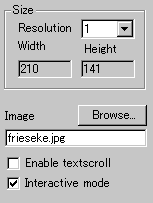
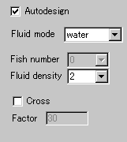
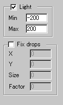
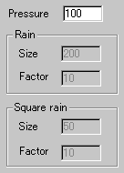

|
This applet simulates a liquid surface which shows a natural looking
waves and interference of waves. You can set rain drops, which are
either normal spherical ones or square ones, and fishes swimming
across the surface. With these and other parameters, you can produce
a great variants of fluid surfaces.
[For more technical
information about the available parameters, click here.]
Most parameters are self-explanatory and you can
always see brief description of each parameter by moving the mouse
pointer over the wizard.
 |
First, set a background image over which you
want to create fluid animation. Select the resolution of the
effect next. "Resolution" is a zooming parameter.
For instance, the value 2 gives twice as large an applet size
as the image size, while the value 1 changes nothing.
|
|
Both the resolution value and the image size
decide the applet's "Width" and "Height"
automatically.
Then, decides if you need textscroll effect
over the surface, and if you want interactive mode enabled
for mouse control. Check "Enable textscroll"
and "Interactive mode" for respective purposes.
|
 |
Next, you choose fluid effects. First, the most
easy one is "Autodesign" setting. This will
produce various fluid effect automatically. This can control
fish and normal rain fall, more precisely speaking. So, even
you check this box, you need to set the rest of the parameters. |
Anyway, I will explain all the available functions. This doesn't
happen in real world, since some choices often neglect other parameters,
and in the wizard, unselectable parameters are greyed out.
At "fluid mode", you choose the liquid simulation
mode from water and oil. Once you select this, "fluid density"
let you control how smoothly the surface behaves. With smaller values,
the surface moves faster and higher values produce smoother motion.
Next is "cross" effect option and its timing defined
by "cross factor". A higher value for the timing
factor means that rarer wave crossing across the screen occurs.
 |
With "light" option enabled, you will add
a shadow effect to waves. However, this option may make the
animation rather slow due to the massive additional calculation
required.
You can even control the contrast of shadow at "Min"
and "Max" parameters. They take values between
-255 and 255. Remember Max has to be higher than Min value.
|
Now, you're going to configure drops and rains. Well,
rains and drops sound the same and in fact they are except, you
can set in the case of drops the fixed location where rain drops
fall on as well as the size and fall timing.
Check "Fix drop" to enable the effect and place
xy co-ordinates of the falling point at "X" and
"Y" boxes. "Size" and "Factor"
represent a size of a drop and its falling timing. These parameters
exist for rain and square rain as well.
 |
The difference between rain and square rain appear
in the initial shape of a water ring when a drop throws onto
the surface. A rain drop (as well as a fixed rain drop) creates
a spherical ring, while a square rain drop results in an unusual
square ripple. |
Finally, you can set a "pressure" value for rains.
If you want a fast significant water ring, place a high value between
1 and 2000.
Proceed to the textscroll
menu if you have checked the textscroll box; otherwise go to
the expert menu.
|